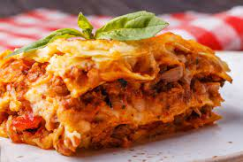

Lasaña de Carne
Es un tipo de pasta de origen italiano.Es una entrada o primer plato caliente que se suele comer en invierno o en los periodos fríos de la primavera.
Es un tipo de pasta de origen italiano.Es una entrada o primer plato caliente que se suele comer en invierno o en los periodos fríos de la primavera.
Es un plato de arroz originario de la región española de Valencia.

Es una comida rápida y fácil de hacer.Forma parte de uno de los alimentos icono de la cocina estadounidense.
Es una bebida deliciosa. Ideal para acompañar cualquier comida en verano.
Perfecta y sabrosa forma de disfrutar tu café.
Jugo exquisito de una fruta tropical cargado de nutrientes. Es ideal para compartir en los días calurosos y además es fácil de hacer.

Es un postre de origen francés.
Execelente postre para compartir con familia y amigos en cualquier ocasión.
Elaborado con una natilla teniendo como ingredientes principales huevos enteros, leche y azúcar.